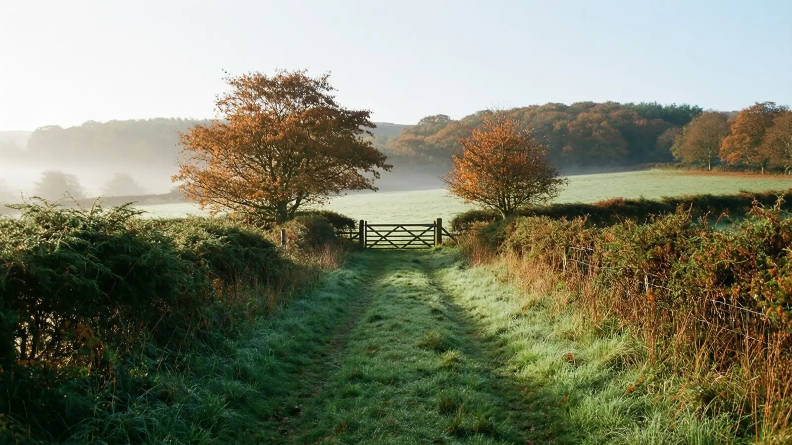

Where we meet
Every walk starts at the shelter by the wood, ten minutes before the hour.
Example Street 12, 0000 Sampletown, Belgium
Free parking beside the shelter.

Walking club · Sampletown
Three walks a week around Sampletown, for every pace. Come once to try: the first walk is free.

The same three walks every week, whatever the weather. No need to book.
Sunday 12 October
14 km through the beech wood, and soup at the finish.
Saturday 8 November
Tools are provided. Members and neighbours welcome.
Friday 5 December
The year in photos, and the programme for the next one.
Sunday 11 January
10 km, then pancakes at the shelter.
5 to 8 km on good paths, with breaks. For a first walk, or a quiet one.
10 to 14 km, with some hills. The pace of a conversation.
18 km and more, all day, with a packed lunch.
Volunteers, elected each January.
Ada Sample
Chair
Grace Sample
Secretary
Ludovic Sample
Treasurer
Marie Sample
Walk leader
Every walk starts at the shelter by the wood, ten minutes before the hour.
Example Street 12, 0000 Sampletown, Belgium
Free parking beside the shelter.
It is free, and nobody is left behind. Bring good shoes and something to drink.